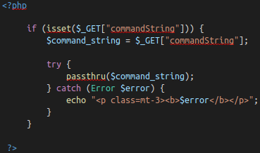

introduction
accessing machine
[SEVERITY 1] injection
[SEVERITY 1]OS command injection
[SEVERITY 1] command injection practical
this is practical and talk about 2 things those are
---What is Active Command Injection?
Blind command injection occurs when the system command made to the server does not return the response to the user in the HTML document for example we look evilshell code is example of that

---Ways to Detect Active Command Injection
We know that active command injection occurs when you can see the response from the system call those commands are
- whoami
- id
- ifconfig/ip addr
- uname -a
- ps -ef
Linux
Windows
- whoami
- ver
- ipconfig
- tasklist
- netstat -an
2. the second one is use command ""ps -ef""

3. the third is use command ""whoami""
4. the fourth is use command ""cat /etc/passwd | grep www-data""
5. the fifth is use command ""lsb_release -a""
6 the sixth is use command ""locate motd""
# "i look that from Ai"
[severity 2]broken authentication
this one is only read that talk about authentication mechanisms this means Authentication and session management constitute core components of modern web applications. Authentication allows users to gain access to web applications by verifying their identities some common authentication mechanisms -brute force -use of weak credentials -weaksession Cookies
[severity 2] broken authentication practical
this talk about we'll be
looking at a logic flaw within the authentication mechanism.
such as usernames and passwords.
What is the flag that you found in darren's account?
What is the flag that you found in arthur's account?
[severity 3] sensitive data exposure(introduction)
this one is also read that talk about sensitive data exposure and deploy a machine When a webapp accidentally divulges sensitive data, we refer to it as "Sensitive Data Exposure". This is often data directly linked to customers (e.g. names, dates-of-birth, financial information, etc), but could also be more technical information,
[severity 3] sensitive data exposure (supporting material 1)
this one is read that is continue on previous talk about
cover how to crack these. When it comes to hash cracking, Kali
comes pre-installed with various tools -- if you know how to
use these then feel free t
o do so; however, they are outwith the scope of this material.
it's no need answer
[severity 3]sensitive data exposure (supporting material 2)
this one is also no nead question but talk about Database engines usually follow the Structured Query Language (SQL) syntax; however, alternative formats (such as NoSQL) are rising in popularity.
[severity 3] sensitive data exposure (challenge)
this talk about how to crack and When it comes to hash cracking, Kali comes pre-installed with various tools -- if you know how to use these then feel free to do so; however, they are outwith the scope of this material.